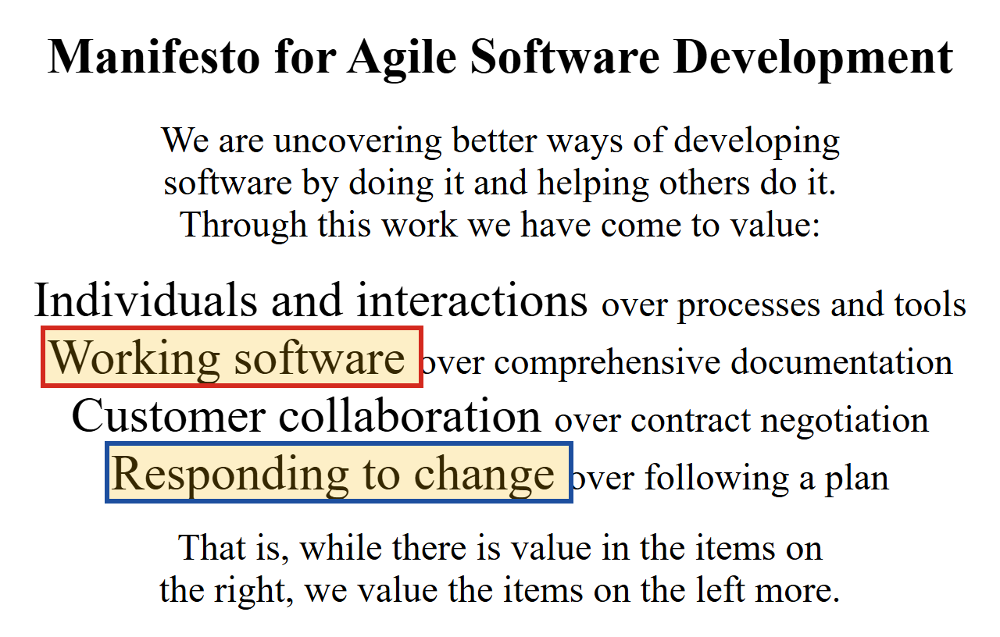
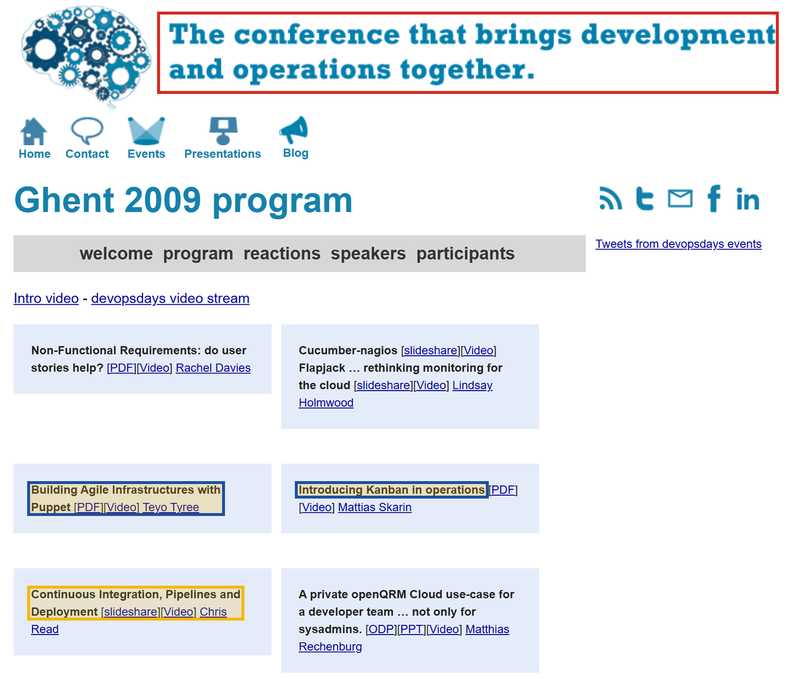
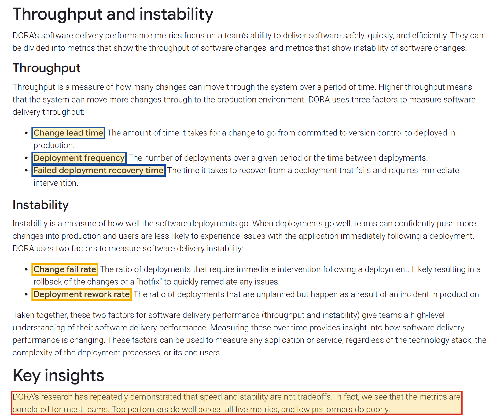

Ở cuối tab Phía server của Bài 00 còn một câu hỏi chưa được kể hết: tám chặng không phải code của bạn thì ai lo? Trong phần lớn lịch sử ngành phần mềm, câu trả lời là một đội khác. Muốn hiểu vì sao người ta phải nghĩ ra DevOps, hãy bắt đầu từ cách chia việc ấy.
Phát triển và vận hành: hai đội, hai thước đo
Ở rất nhiều công ty phần mềm trước năm 2010, và ở không ít công ty hôm nay, công việc được chia cho hai bộ phận. Bộ phận phát triển (development, gọi tắt là dev) viết tính năng mới. Bộ phận vận hành (operations, gọi tắt là ops) giữ cho hệ thống chạy: lắp và cấu hình máy chủ, giữ mạng và firewall, sao lưu dữ liệu, trực khi có sự cố lúc nửa đêm. Nói theo bản đồ chín chặng, dev lo ứng dụng, còn ops lo gần như mọi thứ quanh nó.
Chia việc như vậy không có gì sai; mỗi bên cần những kỹ năng khác nhau. Rắc rối nằm ở chỗ hai bên được đánh giá bằng hai thước đo kéo về hai phía ngược nhau. Dev được đánh giá bằng lượng tính năng mới đưa ra, tức là bằng số thay đổi. Ops được đánh giá bằng việc hệ thống không sập, mà như Bài 00 đã lập luận, một hệ thống đang chạy tốt chỉ hỏng khi có thứ gì đó thay đổi. Hệ quả rất tự nhiên: với ops, mỗi thay đổi là một rủi ro cần hạn chế; với dev, mỗi lần bị hạn chế là một tính năng chậm ra mắt.
- Deploy triển khai
- Việc đưa một phiên bản mới của ứng dụng lên server để người dùng bắt đầu dùng nó. Tiếng Việt hay nói gọn là "đưa lên" hoặc "triển khai".
- Production môi trường thật
- Những server đang phục vụ người dùng thật. Đối lập với máy dev và các server dùng để thử. Một lỗi trên production là lỗi người dùng nhìn thấy.
Cách hai bên dung hoà thường là gom thay đổi lại cho ít lần deploy hơn. Nhiều tính năng được dồn vào một bản phát hành lớn, đưa lên production vài tháng một lần, vào một khung giờ ban đêm đã đặt lịch trước. Dev viết xong thì bàn giao một gói phần mềm kèm tài liệu hướng dẫn cài đặt; ops nhận gói ấy và tự cài lên server. Năm 2006, Werner Vogels, giám đốc công nghệ của Amazon, tả lại mô hình này trong một cuộc phỏng vấn với tạp chí ACM Queue bằng câu sau:
"The traditional model is that you take your software to the wall that separates development and operations, and throw it over and then forget about it."
Câu ấy dịch ra là: mô hình truyền thống là mang phần mềm tới bức tường ngăn phát triển với vận hành, ném nó qua tường, rồi quên đi. Bức tường ở đây không có thật; nó là hình ảnh của chính Vogels cho việc bàn giao một chiều.
Khi có sự cố: mỗi bên thấy nửa tấm bản đồ
Cái giá của bức tường lộ ra rõ nhất lúc có sự cố. Trở lại tình huống mở đầu Bài 00: web không vào được. Dev chỉ thấy code của mình, đọc lại, thấy không có gì đổi, kết luận "lỗi ở server". Ops thấy server còn chạy, firewall đúng luật, kết luận "lỗi ở code". Mỗi bên đúng với nửa bản đồ mình nhìn thấy, và không bên nào nhìn được cả chín chặng. Thời gian trôi qua trong lúc hai bên chứng minh lỗi không phải của mình.
Trước DevOps, phần mềm thường do hai đội làm: dev đo bằng số thay đổi, ops đo bằng sự ổn định. Hai thước đo ngược nhau dẫn tới những bản phát hành lớn, hiếm, bàn giao qua "bức tường"; và khi có sự cố, mỗi bên chỉ thấy nửa tấm bản đồ.
Bước cải cách đầu tiên đến từ phía những người viết code.
Trước khi có ai nói tới DevOps, giới lập trình đã tự cải cách cách làm của mình. Cuộc cải cách ấy giải quyết được một nửa bài toán; nửa còn lại là chỗ DevOps ra đời.
2001: Tuyên ngôn Agile
Cuối thập niên 1990, nhiều dự án phần mềm vẫn đi theo lối lập kế hoạch kỹ từ đầu: viết đặc tả, rồi thiết kế, rồi mới viết code, rồi mới kiểm thử, mỗi bước kéo dài hàng tháng. Khi phần mềm xong thì yêu cầu của khách hàng đã đổi. Năm 2001, mười bảy người làm phần mềm cùng ký một văn bản ngắn tên là Manifesto for Agile Software Development, tuyên ngôn phát triển phần mềm linh hoạt.

Từ tuyên ngôn ấy, các đội phát triển chuyển sang làm việc theo những vòng ngắn, thường vài tuần một vòng: mỗi vòng làm xong một ít tính năng chạy được, cho khách hàng xem, rồi điều chỉnh. Đội dev nhờ vậy ra thay đổi nhanh hơn trước rất nhiều.
Giới hạn: tốc độ dừng lại ở bức tường
Nhưng "làm xong" ở đây là xong trên phía dev. Mã nguồn sẵn sàng sau mỗi vòng hai tuần không có nghĩa là người dùng được dùng nó sau hai tuần, vì đường từ code xong tới production vẫn đi qua bức tường cũ: bàn giao, xếp lịch, cài tay. Ở nhiều tổ chức, dev đã chạy theo nhịp tuần trong khi production vẫn chỉ đổi theo nhịp quý. Thay đổi dồn lại phía trước bức tường, và mỗi lần deploy lại thành một lần lớn, đúng loại thay đổi mà ops muốn tránh nhất.
Tám năm sau tuyên ngôn, câu hỏi vẫn còn nguyên. Phần giới thiệu của một bài nói ở hội nghị devopsdays đầu tiên năm 2009 (tab sau) mở đầu bằng đúng câu này: "Software development teams have had Agile going for some time. But how can operations derive from the same benefits?" Nghĩa là: các đội phát triển đã có Agile từ lâu, nhưng vận hành thì hưởng lợi từ nó bằng cách nào?
Agile (2001) làm phía phát triển ra thay đổi nhanh và nhỏ hơn. Nó không chạm tới đường đi từ code xong tới production, nên tốc độ dồn lại ở bức tường giữa dev và ops.
Muốn đi tiếp thì phải dỡ chính bức tường ấy. Trong những năm 2006–2009, nhiều nơi bắt đầu làm việc đó.
Không ai phát minh ra DevOps trong một ngày. Nó thành hình qua bốn mốc nối tiếp nhau, mỗi mốc giải quyết thêm một phần của vấn đề ở tab Hai đội.
2006: "You build it, you run it"
Trong cùng cuộc phỏng vấn năm 2006 với ACM Queue, ngay sau câu về bức tường, Werner Vogels kể cách Amazon làm khác: "Not at Amazon. You build it, you run it." Đội nào viết một dịch vụ thì chính đội đó vận hành nó, kể cả trực sự cố. Theo Vogels, việc này đưa lập trình viên tiếp xúc hằng ngày với hoạt động thật của phần mềm mình viết, và với khách hàng của nó. Amazon dỡ bức tường bằng cách bỏ hẳn bước bàn giao: hai đầu của tấm bản đồ về chung một nhóm.
2008: "Agile Infrastructure"
Ở hội nghị Agile năm 2008 tại Toronto, Andrew Shafer đề xuất một buổi thảo luận về chủ đề Agile Infrastructure: áp tinh thần Agile vào phía hạ tầng. Theo những bài kể lại lịch sử DevOps về sau, chủ đề ít người quan tâm tới mức chỉ một người tìm tới: Patrick Debois, một chuyên gia tư vấn người Bỉ từng phải đứng giữa đội phát triển và đội vận hành trong một dự án chuyển trung tâm dữ liệu. Hai người bắt đầu trao đổi từ đó.
2009: mười lần deploy một ngày
Tháng 6 năm 2009, ở hội nghị Velocity, John Allspaw, người phụ trách vận hành, và Paul Hammond, người phụ trách kỹ thuật phát triển, của trang chia sẻ ảnh Flickr, trình bày bài nói 10+ Deploys per Day: Dev and Ops Cooperation at Flickr. Con số trong tiêu đề gây chú ý vì nó ngược hẳn với lối "vài tháng một bản phát hành": vào một ngày bình thường, Flickr deploy lên production khoảng mười lần hoặc hơn.
Điều đáng nhớ là lập luận đứng sau con số. Một thay đổi nhỏ thì dễ kiểm tra, dễ hiểu khi nó gây lỗi, và dễ gỡ ra. Deploy thường xuyên vì vậy không làm hệ thống kém ổn định đi, nếu đủ hai điều kiện: việc deploy được tự động hoá để lần nào cũng giống lần nào, và dev với ops dùng chung công cụ, chung số liệu, cùng nhìn một màn hình khi có sự cố. Mâu thuẫn "dev muốn thay đổi, ops muốn ổn định" ở tab đầu hoá ra là mâu thuẫn của những thay đổi lớn.
Tháng 10 năm 2009: devopsdays ở Ghent
Patrick Debois không đi được tới Velocity và xem bài nói của Flickr qua video. Được nhiều người trên mạng xã hội cổ vũ, anh tự tổ chức một hội nghị ở Ghent, Bỉ, vào tháng 10 năm 2009, đặt tên là devopsdays: ghép hai chữ development và operations. Chữ devops từ đó trở thành tên gọi chung cho cách làm mà hội nghị bàn tới, và devopsdays về sau được tổ chức ở nhiều thành phố trên thế giới.

Hai cái tên trong Ảnh 3 cần một câu giải thích. Puppet là một công cụ cho phép mô tả cấu hình của máy chủ trong các tệp văn bản, để máy cấu hình đúng như mô tả thay vì do người gõ tay từng lệnh. Kanban là một cách sắp việc trên một bảng chung để cả nhóm nhìn thấy việc nào đang làm, việc nào đang chờ. Bản thân hai công cụ không quan trọng với phụ lục này; điều đáng chú ý là ở năm 2009, người vận hành đã muốn quản lý máy chủ như quản lý code, và người viết code đã muốn tự động hoá đường lên production.
Ba ý ghép thành DevOps trong khoảng 2006–2009: đội viết ra phần mềm cũng vận hành nó (Amazon); hạ tầng cũng làm theo lối Agile (Toronto 2008); thay đổi nhỏ, deploy tự động và thường xuyên thì vừa nhanh vừa ổn định (Flickr 2009). Hội nghị devopsdays ở Ghent cuối năm 2009 cho cách làm ấy một cái tên.
Một cái tên thì chưa phải định nghĩa. Vậy rốt cuộc DevOps là gì, và làm sao biết một nhóm đang làm DevOps tốt hay dở?
Mười hai năm sau hội nghị devopsdays đầu tiên, DevOps có một văn bản chuẩn: IEEE 2675-2021, năm 2022 được chấp nhận thành chuẩn quốc tế ISO/IEC/IEEE 32675:2022. Bên cạnh định nghĩa trong chuẩn, nghề này còn có một bộ chỉ số được nghiên cứu nhiều năm để đo DevOps.
Định nghĩa trong chuẩn
DevOps là tập hợp các nguyên tắc và cách làm giúp các bên liên quan giao tiếp và cộng tác tốt hơn, nhằm đặc tả, phát triển và vận hành các sản phẩm và dịch vụ phần mềm và hệ thống, đồng thời cải tiến liên tục mọi khía cạnh trong vòng đời của chúng.
Nguyên văn: "DevOps: Set of principles and practices which enable better communication and collaboration between relevant stakeholders for the purpose of specifying, developing, and operating software and systems products and services, and continuous improvements in all aspects of the life cycle."
Các bên liên quan (stakeholders) là những người có phần trong việc phần mềm được làm ra và chạy ra sao; trong câu chuyện của phụ lục, đó trước hết là hai đội ở tab Hai đội. Chính chuẩn cũng kể lại thuật ngữ ra đời từ đâu (mục 5.1), và lời kể ấy khớp với những gì tab đầu đã kể. Theo chuẩn, thuật ngữ DevOps hình thành khi đã có sẵn những công cụ tự động hoá hoàn toàn việc build, đóng gói và deploy ứng dụng, cùng với nhận thức rằng các tổ chức công nghệ thông tin chưa sẵn sàng dùng những công cụ ấy cho hiệu quả. Chuẩn viết tiếp rằng lập trình viên và người vận hành, theo truyền thống, có những góc nhìn khác nhau, có lúc mâu thuẫn nhau.
Chuẩn cũng nêu bức tranh quen thuộc: lập trình viên muốn đi nhanh, còn đội vận hành lo giữ độ tin cậy và bảo đảm an ninh mạng. Nhưng chính chuẩn gọi bức tranh ấy là một mô tả cực đoan, đơn giản hoá quá mức ("an extreme, oversimplified characterization"). Vì vậy hai thước đo ngược nhau ở tab Hai đội nên được hiểu là một cách mô tả giúp thấy vì sao hai phía kéo về hai hướng, chưa phải mô tả chính xác cho mọi công ty.
Để nối định nghĩa của chuẩn với các mốc ở tab trước, phụ lục dùng một cách nói ngắn hơn và hẹp hơn, của riêng mình: DevOps là cách tổ chức để một nhóm chịu trách nhiệm cho phần mềm từ lúc viết tới lúc nó chạy ổn định, dựa trên ba trụ là chung trách nhiệm, tự động hoá những bước lặp lại giữa code và production, và đo lường.
Đây là lời của phụ lục, không trích từ chuẩn. Ba trụ ấy khớp với các mốc ở tab trước: chung trách nhiệm là "you build it, you run it"; tự động hoá là điều kiện để Flickr deploy mười lần một ngày; đo lường là cách biết có cải tiến liên tục hay không, điều mà định nghĩa của chuẩn nhắc tới, và là phần mà tab này kể tiếp.
Đo DevOps: năm chỉ số của DORA
Nếu DevOps hứa "vừa nhanh vừa ổn định", phải có cách đo cả hai. Chương trình nghiên cứu DORA (DevOps Research and Assessment), nay do Google Cloud điều hành, nhiều năm khảo sát các nhóm phần mềm và rút ra một bộ chỉ số đo hiệu quả giao phần mềm. Bộ hiện hành gồm năm chỉ số, chia hai nhóm: nhóm throughput đo tốc độ thay đổi đi tới production, nhóm instability đo mức thay đổi gây ra rắc rối.

Câu khoanh đỏ trong Ảnh 4 trả lời thẳng mâu thuẫn ở tab Hai đội. Thước đo của dev (thay đổi nhiều, nhanh) và thước đo của ops (ít sự cố, khôi phục nhanh) được đặt chung trong một bảng điểm, và dữ liệu của DORA cho thấy ở phần lớn các nhóm, hai nhóm chỉ số đi cùng chiều: nhóm làm tốt thường tốt ở cả năm, nhóm làm kém thường kém ở cả năm. Một nhóm DevOps vì vậy không chọn giữa nhanh và ổn định; nó được đo trên cả hai.
DevOps không phải là gì
Vì cái tên lan rộng nhanh hơn cách hiểu, có ba hiểu lầm hay gặp. Thứ nhất, DevOps không phải một công cụ để mua: Docker, GitLab hay Kubernetes là những công cụ giúp làm DevOps, nhưng một công ty dùng đủ cả ba mà vẫn bàn giao qua bức tường thì vẫn là mô hình cũ. Thứ hai, DevOps không có nghĩa là lập trình viên tự làm hết mọi việc của vận hành; nó có nghĩa là hai phía chung mục tiêu và chung trách nhiệm, còn chuyên môn sâu về mạng hay cơ sở dữ liệu vẫn cần người giỏi việc đó. Thứ ba, "DevOps engineer" ngày nay là một chức danh tuyển dụng phổ biến, và nhiều người trong nghề chỉ ra một nghịch lý: lập ra một "đội DevOps" riêng đứng giữa dev và ops dễ dựng thêm một bức tường thứ hai, đúng điều phong trào muốn tránh.
Chuẩn IEEE 2675-2021 định nghĩa DevOps là tập hợp nguyên tắc và cách làm giúp các bên liên quan cộng tác tốt hơn suốt vòng đời phần mềm; phụ lục tóm lại thành ba trụ: chung trách nhiệm, tự động hoá và đo lường. DORA đo DevOps bằng năm chỉ số tốc độ và độ ổn định, và thấy hai thứ đi cùng chiều chứ không đánh đổi.
Những ý tưởng của năm 2009 giờ nằm ở đâu trong công việc hằng ngày, và trong lộ trình này?
Mỗi vấn đề của thời "hai đội" để lại một lời giải, và mỗi lời giải ấy là một phần của lộ trình bạn đang học. Bảng dưới đây nối chúng lại.
Từ vấn đề cũ tới các module của lộ trình
| Vấn đề cũ | Lời giải | Trong lộ trình |
|---|---|---|
| Mỗi bên chỉ thấy nửa tấm bản đồ khi có sự cố | Người viết ứng dụng hiểu cả chín chặng và đọc được triệu chứng của từng chặng | Bài 00–04 |
| Chạy được trên máy dev nhưng hỏng trên server, vì hai nơi cài đặt khác nhau | Đóng gói ứng dụng cùng mọi thứ nó cần, để nó chạy giống nhau ở mọi máy | Module 1 (Docker) |
| Bàn giao bằng tay, deploy hiếm và lớn | Làm tay một lần cho hiểu, rồi tự động hoá đường từ code tới production để deploy nhỏ và thường xuyên | Module 2 (làm tay), Module 3 (GitLab CI/CD) |
| Không ai ngồi trước server lúc nửa đêm | Phần mềm trông coi tự dựng ứng dụng dậy; số liệu và cảnh báo báo cho người khi cần | Bài 03 (service), Module 4 và 5 |
Dòng đầu của Bảng 1 giải thích vì sao lộ trình mở đầu bằng một tấm bản đồ và cách đọc lỗi, chứ không bằng một công cụ. Mọi lời giải ở các dòng sau đều giả định rằng người làm đã nhìn được cả chín chặng: không thể tự động hoá việc deploy lên một server mà mình không hiểu, và không thể chịu trách nhiệm cho một chặng mà mình không biết nó hỏng trông ra sao.
Nối về Bài 00
Câu "trong cả đường đi, chỉ ứng dụng là code bạn viết" của Bài 00 từng là ranh giới giữa hai đội: bên này tường là dev, bên kia là ops. DevOps không xoá ranh giới ấy khỏi bản đồ; ứng dụng vẫn là code của bạn. Nó chỉ đổi cách chịu trách nhiệm: cả chín chặng giờ là việc chung của những người cùng làm ra và vận hành phần mềm, và lộ trình này dạy bạn đủ để góp phần vào việc chung ấy.
Quay lại bài giảng Bài 00, hoặc đi tiếp tới Bài 01.
Tự kiểm tra
Bấm vào từng dòng khi bạn giải thích được mà không nhìn lại.
- Giải thích được vì sao thước đo của dev và của ops từng kéo về hai phía ngược nhau
- Nói được Agile giải quyết được gì, và vì sao tốc độ của nó dừng lại ở bức tường
- Kể được ba ý ghép thành DevOps trong khoảng 2006–2009, mỗi ý gắn với một nơi
- Giải thích được vì sao deploy nhỏ và thường xuyên lại ổn định hơn deploy lớn và hiếm
- Nói lại được định nghĩa DevOps trong chuẩn IEEE 2675-2021, và cách phụ lục tóm nó thành ba trụ
- Kể được hai nhóm chỉ số của DORA, và kết luận của DORA về tốc độ và độ ổn định
- Nói được một hiểu lầm hay gặp về DevOps, và vì sao nó sai
Nguồn đọc thêm
- Manifesto for Agile Software Development, 2001. agilemanifesto.org
- Jim Gray — A Conversation with Werner Vogels, ACM Queue, tập 4 số 4, 2006. Nguồn của hai câu về bức tường và "you build it, you run it". queue.acm.org/detail.cfm?id=1142065
- John Allspaw, Paul Hammond — 10+ Deploys per Day: Dev and Ops Cooperation at Flickr, Velocity 2009. Trang bài viết của Allspaw kèm slide. kitchensoap.com/2009/06/23/slides-for-velocity-talk-2009
- Steve Mezak — The Origins of DevOps: What's in a Name?, DevOps.com, 2018. Bài kể lại buổi thảo luận ở Toronto năm 2008 và việc Debois xem bài nói của Flickr qua video. devops.com/the-origins-of-devops-whats-in-a-name
- devopsdays — trang giới thiệu và lịch sử hội nghị. devopsdays.org/about
- devopsdays Ghent 2009 — chương trình, trang lưu trữ. legacy.devopsdays.org/events/2009-ghent/program
- DORA — DORA's software delivery performance metrics. dora.dev/guides/dora-metrics
- IEEE 2675-2021 — IEEE Standard for DevOps: Building Reliable and Secure Systems Including Application Build, Package, and Deployment. Nguồn của định nghĩa ở tab Định nghĩa; trang giới thiệu chính thức, toàn văn phải trả phí. standards.ieee.org/ieee/2675/6830
- ISO/IEC/IEEE 32675:2022 — bản chuẩn quốc tế được chấp nhận từ IEEE 2675-2021; trang giới thiệu chính thức, toàn văn phải trả phí. iso.org/standard/83670.html
Nguồn ảnh
Ảnh chụp lấy từ Wikimedia Commons, dùng theo giấy phép ghi ở dòng của nó; ảnh đã được chuyển sang đen trắng và cắt khung cho hợp bố cục trang. Ảnh chụp màn hình do tôi tự chụp; các khung màu là phần đánh dấu thêm vào.
- Ảnh 1Trung tâm vận hành mạng của Đại học Indiana — Alan Levine, Wikimedia Commons, CC BY 2.0.
- Ảnh 2Bốn giá trị của Tuyên ngôn Agile — chụp màn hình agilemanifesto.org, 03/10/2026; đã bỏ ảnh nền phía sau chữ và cắt bớt khoảng trống dưới tiêu đề.
- Ảnh 3Chương trình devopsdays Ghent 2009 — chụp màn hình legacy.devopsdays.org, 03/10/2026.
- Ảnh 4Năm chỉ số của DORA — chụp màn hình dora.dev, 03/10/2026.